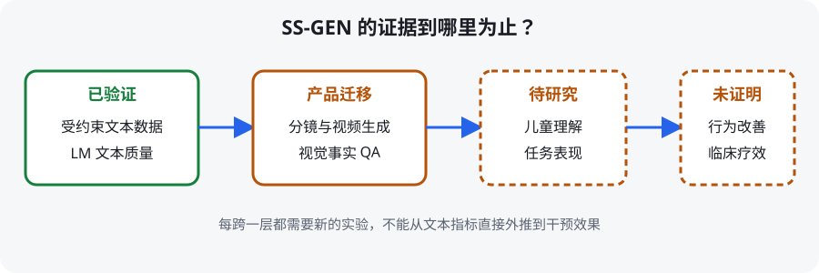

- 它做的事：用 STARSOW 从 14 个章节、179 篇人工 Social Stories 出发，经层级扩增和人工过滤得到 57 个章节、5,085 个 title–story pair；再用这些数据 LoRA 微调 2B–8B 模型。
- 它没有做的事：没有生成视频，没有提出名为“SS-Bench”的独立视频 benchmark，也没有对自闭症儿童做随机对照或临床干预试验。
- 主要结果：Gemma 2B 微调后 BLEU-4 8.86→51.18、ROUGE-L 7.22→27.29、BERTScore 79.0→88.8；人评 situational safety 10.0%→83.3%，但 descriptive orientation 90.0%→83.3% 反而下降。
- 商业价值：它可以成为“特殊教育个性化视频”的受约束脚本层和质量清单；专业人员审批脚本后，再进入分镜和视频生成。

📄 数据来源
依据论文任务定义、实验章节和结论重绘；论文中没有视频生成或临床试验。
1. 先校正论文身份与证据等级
2024 年 arXiv v1 的原题确实是 SS-Bench: A Benchmark for Social Story Generation and Evaluation；AAAI 2025 正式版及当前官方仓库改名为 SS-GEN。两者是同一研究的不同版本，作者名单和实验呈现也有变化。本页按 AAAI 2025 正式版解读，保留 ss-bench.html 文件名以兼容原链接；不混用不同版本的表号或数字。
| 可以据论文声称 | 不能据论文声称 |
|---|---|
| 构建了 5,085 条受约束 Social Story 数据 | 构建了视频数据或视频生成器 |
| 若干 2B–8B 模型经 SFT 后文本指标和人评安全性提升 | 生成故事能改善儿童行为、焦虑或社交能力 |
| 三名受训心理学学生参与模型输出人评 | 完成了临床专家共识、儿童用户研究或随机对照试验 |
| 可用作专业人员的创作辅助与候选脚本 | 可自动替代教师、治疗师、心理师或照护者决策 |
2. 动机与相关工作脉络
普通睡前故事追求有趣；Social Story 更像一份为某个孩子、某个具体情境写的“温和预演”。一句看似自然的“你必须马上……”可能过度命令；一个含糊比喻也可能造成额外理解负担。
Social Stories 由 Carol Gray 体系化，用于帮助自闭症个体理解预期或已经发生的社会情境。传统制作依赖专业人员，成本高、主题覆盖有限。通用 LLM 能扩写，却未必遵守叙事结构、描述/指导比例、人称、积极耐心语气和精确词汇等约束。
SS-GEN 结合了两条研究线：一条是 story generation 与个性化叙事；另一条是用强 LLM 生成监督数据，再微调较小的开放模型。它的独特点是让“数据扩增”服从 Social Story 的专业写作约束，并把约束变成显式评估表。
3. 方法总览：一棵逐层生长、持续修剪的“星树”
输入不是儿童档案，而是人工 seed stories。STARSOW 先把 14 个 seed chapter 解释成 chapter–explanation root；再通过 few-shot 扩出新主题；每个主题向下生成至少 70 个具体 intervention title；最后在结构、描述取向和情境安全约束下生成 200–300 词故事，并通过 ROUGE-L、规则和人工复核“修剪”。
得到 5,085 对 $(x,y)$ 后，作者以 8:1:1 划分训练、验证、测试集，使用 PEFT/LoRA 在 4 张 RTX 4090 上微调 Gemma、Mistral、Llama 3 的 2B–8B 模型。评测包含 BLEU/ROUGE/BERTScore、GPT-4 五维评分，以及三名受训心理学学生的 SC/DO/SS 评分。
先扩“问题空间”，再写具体故事，并在每一层过滤；避免让模型一次从空白跳到全文。
解释并扩 chapter] B --> C[Branching Out
每章扩 intervention titles] C --> D[Bearing Star Fruits
按约束写完整 story] D --> E[Gardening Work
ROUGE-L + 规则 + 人工过滤] E --> F[57 chapters / 5,085 pairs] F --> G[LoRA SFT 2B–8B LMs] G --> H[文本与质量评测]
依据论文 Figure 2 与 Sections “Dataset Construction / Experiments” 重绘。
4. 符号表
| 符号 | 含义 | 形状 / 范围 |
|---|---|---|
| $M$ | 待生成 Social Story 的语言模型 | 函数 |
| $x$ | 故事 title，也是 intervention goal | 文本 |
| $y$ | introduction + body + conclusion 组成的 story content | 文本 |
| $(c_t,e_t)$ | 第 $t$ 个 chapter 及其 explanation | root node |
| $(x_{t,j},y_{t,j})$ | 章节 $t$ 下第 $j$ 个 title–story pair | $j=1,\ldots,n_t$ |
| $n_t$ | 章节 $t$ 下的故事数 | $n_t>1$；最终每章至少 70 titles |
| $D,C$ | descriptive 与 coaching sentences 数量 | 非负整数 |
| $R_L(a,b)$ | 文本 $a,b$ 的 ROUGE-L 相似度 | $[0,1]$ |
| SC / DO / SS | 结构清晰、描述取向、情境安全 | SC 1–5；DO/SS Yes–No |
| CH/DC/EM/GA/RE | GPT-4 评的 coherence、descriptiveness、empathy、grammaticality、relevance | 各 1–5 |
5. 方法详解
5.1 任务形式
title 不只是标题，而是这篇故事要帮助的具体目标，例如“第一次参加消防演习”；模型要围绕目标写完整、前后一致的解释与应对。
- 是什么
- 语言模型 $M$ 读取 intervention title $x$，生成 story content $y$。
- 逐符号
- $y$ 明确含 introduction、main body、conclusion；title 不属于 $y$，但与它组成训练 pair $(x,y)$。
- 为什么还需要框架
- 这个公式本身没有约束。普通提示可能得到结构漂亮却过度命令、含糊或不安全的文本；STARSOW 与质量清单承担约束。
5.2 Taking Root：先扩主题，再扩故事
如果一直从同一批标题改写，数据只是同义复述。先让模型解释“这一章处理什么困难、为什么重要”，再据解释扩新主题，覆盖面才真正向外生长。
seed set 含 14 chapters 和 179 篇人工故事。作者先让 LLM 解释 seed chapters；生成新 root 时，每次随机取 8 个 chapter–explanation few-shot：4 个来自人工 seed，4 个来自此前新生成节点，以同时保持规范与多样性。
- 是什么
- 这是对论文文字定义的显式整理：数据是 root 集合 $\mathcal R$ 与每个 root 下的 story pairs $\mathcal S_t$。
- 注意
- 该集合写法用于帮助理解，不是论文编号公式；没有引入新算法。
5.3 Branching Out：把宽主题拆成可执行目标
每个新 root 之下，模型参考 8 个随机 “chapter–explanation–titles” 示例生成多样 title。chapter 如 “Managing Emotions” 很宽；title 应具体到 “Handling a change in the classroom schedule” 这类可写、可个性化的情境。
5.4 Bearing Star Fruits：三类约束写全文
好故事不是“多给指令”，而是让读者知道将发生什么、别人为什么这么做、自己有哪些安全选择。描述铺足，指导才能不显得强迫。
- 是什么
- Gray 的 GR-Eight Formula：descriptive sentences 至少是 coaching sentences 的两倍。
- 逐符号
- $D$ 包含客观描述、原因、视角与肯定句；$C$ 是温和、安全的行为指导。
- 为什么
- 把故事从命令清单转成情境解释。论文将其作为 DO 的 Yes/No 硬约束。
| 约束 | 论文检查内容 | 评分 |
|---|---|---|
| Structural Clarity | title→introduction→body→conclusion 清楚；三段相互呼应 | 4 个问题，1–5 分 |
| Descriptive Orientation | $D/C\ge2$ | Yes / No |
| Situational Safety | 不用过度直接的第二人称；描述负面行为不用第一人称；积极耐心；表达准确；词汇精确舒适 | 6 个子项，全部 Yes 才合格 |
5.5 Gardening Work：去重、过滤与人工修剪
生成 5,000 篇不难，难的是不让它们变成 179 篇 seed 的换词版本，也不让边界案例混进最终数据。
- 是什么
- 新 chapter（以及流程中的去重对象）与已有项的最大 ROUGE-L 必须低于 0.7 才接受。
- 逐符号
- $r_{new}$ 是候选，$\mathcal D_{existing}$ 是已有集合，$R_L$ 基于最长公共子序列衡量文本重合。
- 局限
- 低词面重合不等于语义真正不同；高重合也可能是必要的规范句。论文因此还加入无效项过滤与人工复核。
5.6 小模型 SFT
模型覆盖 Gemma 2B/7B、Mistral 2B/7B、Llama 3 8B 及 Instruct 变体。作者通过 LLaMA Factory 的 PEFT/LoRA 在 4 张 RTX 4090 上训练。测试时提示被刻意简化为：根据 title 写 200–300 词、简洁清楚、积极支持的 Social Story，以检验数据是否把约束写入模型，而非继续依赖冗长 prompt。
6. 走一遍例子：从“第一次参加消防演习”到可审脚本
- 选 root：将情境归到 “Coping with Changes / Safety Routines”，并写 explanation：突发铃声、队伍移动和环境变化会带来不确定性。
- 生成 title：Going Through My First Fire Drill at School。title 是明确 intervention goal，而不是宽泛的“School Safety”。
- 生成结构：Introduction 说明演习目的；Body 描述铃声、教师、排队、出口和可能感受；Conclusion 重申这是练习，成人会提供帮助。
- 检查比例：假设人工标注出 $D=12$、$C=4$，则 $D/C=3\ge2$，通过 DO。若 $D=6,C=4$，需改写增加解释而非简单删指令。
- 检查安全：删除“你必须冷静”式第二人称命令，避免把负面行为写成“I scream”；改成准确、可选择、积极耐心的表述。
- 视频化前审批：教师/照护者补充真实学校出口、铃声、人员和孩子偏好；专业人员批准文本后才分镜。模型不得自行猜这些个性化事实。
这是按论文约束构造的教学示例，并非论文中报告的具体儿童个案或临床干预结果。
7. 实验：数字与真正含义
7.1 数据规模
| 统计 | 值 |
|---|---|
| 章节 | 57 |
| 每章 titles | ≥70 |
| Social Story pairs | 5,085 |
| 平均 chapter 长度 | 2.46 words |
| 平均 title 长度 | 5.28 words |
| 平均 story content 长度 | 281.65 words |
| train/val/test | 8:1:1 |
7.2 GPT-3.5 与 GPT-4o 数据合成器比较（100 个 seed titles）
| 检查项 | GPT-3.5 | GPT-4o |
|---|---|---|
| SC：结构清楚 | 82.7% | 83.0% |
| SC：引言—主体相关 | 86.2% | 86.8% |
| SC：主体—结论相关 | 82.5% | 83.7% |
| SC：结论—引言相关 | 84.1% | 82.9% |
| DO：描述多于指导 | 56.0% | 59.0% |
| SS：人称 A | 90.0% | 94.0% |
| SS：人称 B | 91.0% | 93.0% |
| SS：积极耐心 | 97.0% | 98.0% |
| SS：准确表达 | 91.0% | 90.0% |
| SS：精确词汇 | 95.0% | 92.0% |
| 人工偏好 | 38.0% | 62.0% |
GPT-4o 因总体偏好与多数项更高被选作全量数据合成器。但 59% 的 DO 通过率表明，即便较强模型也频繁违反描述/指导比例；人工过滤不是装饰步骤。
7.3 SFT 的自动文本指标（Table 4 完整模型行）
| 模型 | Zero-shot | SFT | ||||||||
|---|---|---|---|---|---|---|---|---|---|---|
| B-4 | R-1 | R-2 | R-L | BERT | B-4 | R-1 | R-2 | R-L | BERT | |
| Gemma 2B | 8.86 | 21.81 | 4.63 | 7.22 | 79.0 | 51.18 | 47.58 | 20.13 | 27.29 | 88.8 |
| Gemma-Instruct 2B | 31.68 | 30.44 | 6.49 | 14.17 | 82.7 | 50.35 | 46.53 | 19.36 | 26.93 | 88.8 |
| Gemma-1.1-Instruct 2B | 42.43 | 34.98 | 8.82 | 17.22 | 84.9 | 51.02 | 46.70 | 19.53 | 27.15 | 88.9 |
| Gemma 7B | 19.24 | 32.12 | 9.57 | 12.48 | 81.7 | 54.74 | 52.12 | 24.74 | 31.04 | 89.9 |
| Gemma-Instruct 7B | 39.80 | 32.56 | 8.09 | 16.33 | 84.1 | 53.82 | 50.80 | 23.34 | 30.19 | 89.7 |
| Gemma-1.1-Instruct 7B | 45.64 | 37.65 | 10.00 | 17.87 | 84.8 | 54.04 | 51.04 | 23.71 | 30.40 | 89.8 |
| Mistral-v0.1 7B | 19.76 | 25.78 | 5.95 | 12.47 | 81.6 | 54.84 | 51.70 | 24.07 | 30.58 | 89.8 |
| Mistral-v0.1-Instruct 7B | 40.14 | 38.23 | 11.85 | 20.79 | 86.5 | 54.17 | 51.17 | 23.79 | 30.54 | 89.7 |
| Mistral-v0.2-Instruct 7B | 37.44 | 37.70 | 11.51 | 19.74 | 86.3 | 54.30 | 52.05 | 24.75 | 31.18 | 89.9 |
| Llama 3 8B | 9.49 | 23.46 | 5.82 | 8.15 | 79.3 | 16.41 | 47.66 | 22.20 | 9.69 | 81.2 |
| Llama 3-Instruct 8B | 39.04 | 41.19 | 12.68 | 19.37 | 85.5 | 54.56 | 51.26 | 23.64 | 30.30 | 89.7 |
每个模型前后各推理三次并做 t-test；论文以 † 标示 $p<0.01$。多数行 SFT 全面上升，但 Llama 3 base 的 BLEU-4/ROUGE-L 增幅明显较小，作者推测其 15T 预训练规模可能需要更大、更针对的数据才能充分适配。
7.4 人评：安全性提升最大，描述取向并非单调变好
| 设置 | 模型 | SC（1–5） | DO 合格 | SS 合格 |
|---|---|---|---|---|
| SFT | Gemma 7B | 4.90 | 86.7% | 83.3% |
| SFT | Gemma 2B | 4.83 | 83.3% | 80.0% |
| Zero-shot | Gemma-1.1-Instruct 7B | 3.89 | 93.3% | 10.0% |
| Zero-shot | Gemma-1.1-Instruct 2B | 3.28 | 90.0% | 6.0% |
这是最值得商业团队细读的表：SFT 把 SS 从 6–10% 拉到 80–83.3%，结构也明显变好；但 DO 从 zero-shot 的 90–93.3% 降至 83.3–86.7%。因此不能说“所有约束都提升”。三名评价者是接受准则培训的心理学学生；每个设置抽 50 篇 test stories。GPT 与人评相关系数为 0.34–0.54，属于正相关但不足以完全替代人评。
深入（可跳过）：论文没有独立“消融表”
这篇论文的对照主要是 zero-shot vs SFT、base vs instruct、2B/7B/8B、GPT-3.5 vs GPT-4o；没有对 STARSOW 四阶段逐一移除的标准 ablation。因此不能声称“去掉某一步下降 X%”。
8. 从文本论文迁移到特殊教育视频
最稳妥的商业产品不是“一键给孩子生成治疗视频”，而是专业人员 workspace：输入真实地点、人物、感官刺激和目标行为；系统生成候选故事并自动跑 SC/DO/SS 检查；专业人员逐句批准；最后才用固定角色、真实场所照片或受控 avatar 生成视频。
| 小众场景 | 付费方 | 可落地 MVP | 证据缺口 |
|---|---|---|---|
| 博物馆/机场/医院“访问前 visual story” | 场馆无障碍与客户体验部门 | 固定场所路线 + 多个感官/排队情境版本 | SS-GEN 未研究视频；需要场馆与用户测试 |
| 特教教师备课 | 学校/学区/特教 SaaS | 标题→候选故事→规则高亮→人工签发→模板视频 | 未证明节省多少工时或学习效果 |
| 牙科、影像检查、采血预演 | 儿童医院/诊所 | 仅描述流程与可选择支持，不给医疗建议 | 需临床与无障碍团队共审；无疗效证据 |
| 企业 neurodiversity onboarding | HR / L&D | 办公情境预演、政策变化说明 | 数据面向 autistic youth，成人域需重新验证 |
SS-GEN 不是视频生成论文，也不是临床疗效研究。它只能为视频产品提供脚本生成与约束检查方法。视频偏好不等于理解，理解也不等于行为或临床改善；三者需要不同研究设计。
9. 局限与风险
- 未与目标儿童共同评测：主要人评来自 3 名受训心理学学生，论文没有儿童或家庭用户研究。
- 指标代理性：BLEU/ROUGE 奖励接近 reference 的措辞，但个性化故事存在多种正确表达；高分可能来自模板化。
- DO 不稳定：SFT 人评 descriptive orientation 低于 zero-shot，对“数据教会所有约束”的解释要克制。
- 人工过滤不可省：论文题目强调生成，但最终数据质量依赖 rigorous human filtering；商业成本模型必须计入专业审核。
- 个性化隐私：真实产品会处理儿童、家庭、学校和医疗场景信息；论文数据集并未解决隐私、同意和保留策略。
- 商标与准则：“Social Story™”与 Gray 的 10.2 criteria 有明确专业语境，产品命名和宣称需独立审查。
- 视频新增风险：模型脚本正确，不代表画面中的人物、路线、情绪或危险动作正确；视觉层需要第二套 QA。
10. 复现指南（仅整理官方命令，未执行）
官方仓库提供数据生成脚本、Technical Appendix 和 Hugging Face 数据；README 未给论文 LoRA SFT 的完整配置/命令，也未公开 SFT 权重。以下命令按官方 README 抄录整理。
10.1 环境与数据加载
git clone https://github.com/MIMIFY/SS-GEN.git
cd SS-GEN
pip install openai tqdm numpy pandas rouge-score datasets
python - <<'PY'
from datasets import load_dataset
ds = load_dataset("FMiMiY/SS-GEN")
print(ds)
PYHugging Face 页面要求登录时，先执行 huggingface-cli login 并接受数据访问条件。
10.2 STARSOW 生成流程
# README 原文写成 `seed_ main.py`（含空格，疑似文件名排版错误）；
# 运行前请先核对仓库内实际文件名。
cd seed_data_gen
python seed_ main.py
cd ../hierarchical_instruct
python bootstrap_chapters_breadth.py \
--seed_stories_path ../seed_data_gen/seed_data/seed_chapters_explanations.jsonl \
--batch_dir data/gpt4_test_generations \
--num_chapters_to_generate 56 \
--engine gpt-4o \
--api_key YOUR_API_KEY \
--base_url YOUR_BASE_URL
python bootstrap_titles_breadth_depth.py \
--seed_stories_path ../seed_data_gen/seed_data/seed_chapter_title_list.jsonl \
--input_file machine_generated_chapters_explanations.jsonl \
--batch_dir data/gpt4_test_generations \
--num_titles_to_generate 70 \
--engine gpt-4o \
--api_key YOUR_API_KEY \
--base_url YOUR_BASE_URL
python bootstrap_stories_depth.py \
--seed_stories_path ../seed_data_gen/seed_data/seed_chapter_story_list.jsonl \
--input_folder "Titles generation" \
--batch_dir data/gpt4_test_generations \
--output_seed_folder "Stories generation/Seed_Titles" \
--output_expand_folder "Stories generation/Generated_Titles_from_gpt4" \
--engine gpt-4o \
--api_key YOUR_API_KEY \
--base_url YOUR_BASE_URL10.3 SFT 复现缺口
论文说明用 LLaMA Factory、PEFT/LoRA 和 4× RTX 4090，但仓库 README 没给可直接复现 Table 4 的 YAML、learning rate、LoRA rank、epoch、seed 与评测脚本命令。可靠复现应固定官方数据 split、三次 inference、paired t-test（$\alpha=0.05$，论文 † 表示 $p<0.01$），并单独实现 SC/DO/SS 人评界面。
11. 常见疑问
SS-Bench 和 SS-GEN 是什么关系？
SS-Bench 是 2024 年 arXiv v1 的原始标题，SS-GEN 是 AAAI 2025 正式版名称。本页以正式版为主，早期标题用于帮助检索；它们都研究 Social Story 文本，均非视频 benchmark。
BLEU-4 从 8.86 到 51.18 是否说明故事更适合儿童？
只说明输出更接近测试 reference 的 n-gram。适龄、个体适配与干预效果要靠目标用户和专业人员研究。
既然人评 SS 提升到 83.3%，能否自动发布？
不能。仍有约 1/6 输出未通过全部 SS 子项，而且样本、人评者和场景有限。它适合作为候选生成器与 QA 助手。
为什么先做脚本再做视频？
视频会把文本错误固化并加入新的视觉事实。脚本先过 SC/DO/SS 和个案事实审校，后续分镜才有稳定 source of truth。
12. 术语表
- Social Story™
- 遵循 Carol Gray 准则、帮助理解特定社会情境的个性化故事；不是泛指任何社交故事。
- STARSOW
- Taking Root、Branching Out、Bearing Star Fruits、Gardening Work 四阶段层级数据生成策略。
- Structural Clarity
- 标题、引言、主体、结论结构清楚并相互呼应。
- Descriptive Orientation
- 描述与解释多于直接指导，论文以 $D/C\ge2$ 检查。
- Situational Safety
- 人称、语气、准确表达与精确词汇等安全要求。
- PEFT / LoRA
- 参数高效微调方法，只训练低秩适配参数以降低成本。
- BERTScore
- 基于 contextual embedding 的文本语义相似度，仍是 reference-based 代理指标。
核读来源
本页依据 AAAI 2025 正式论文（39(2):1300–1308）、arXiv 2406.15695、官方 GitHub README、Technical Appendix 入口与 Hugging Face 数据页整理。精确数字来自 Tables 2–6。最后核查：2026-10-12；命令仅引用，未执行。